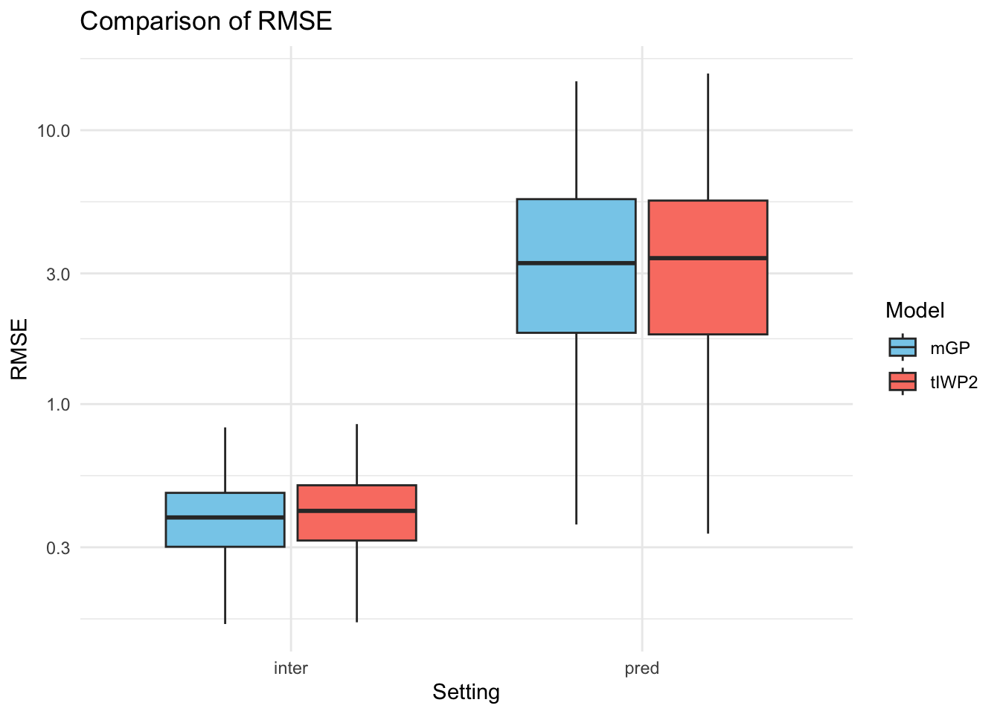
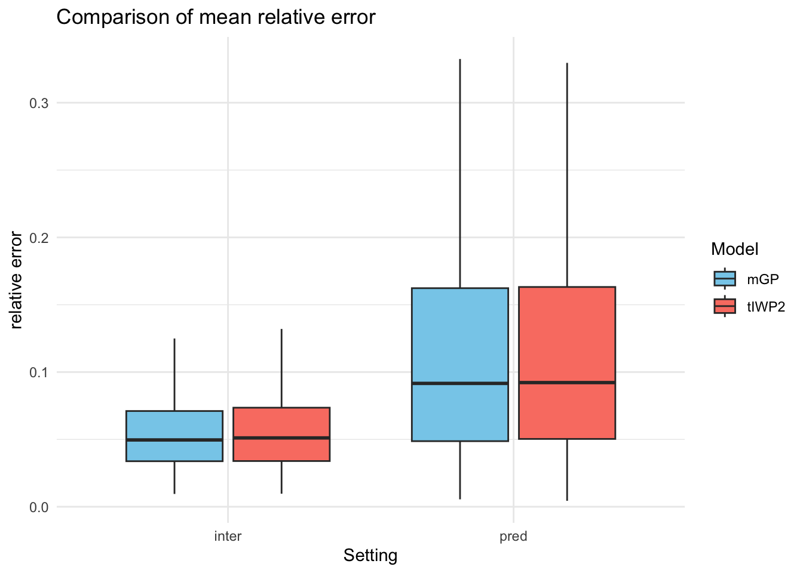
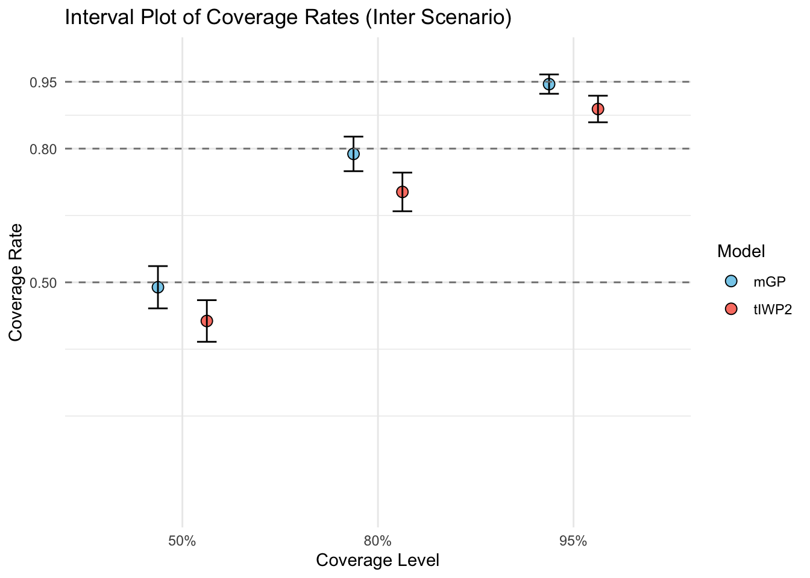
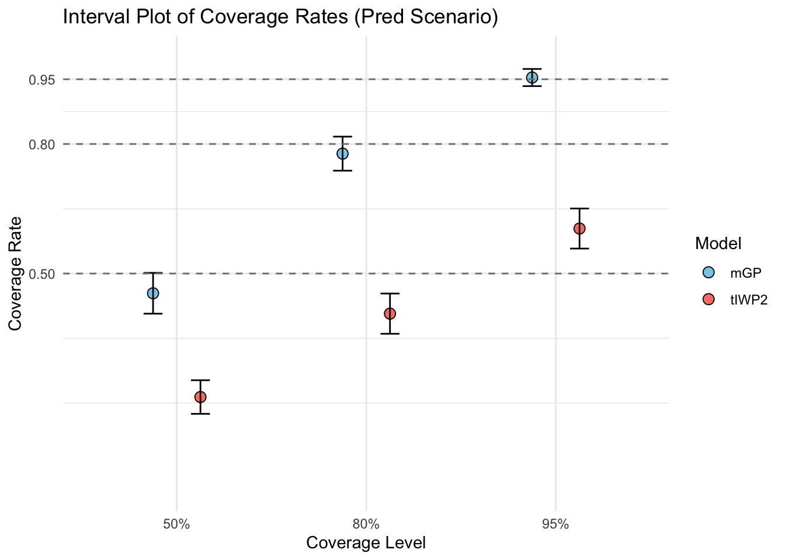
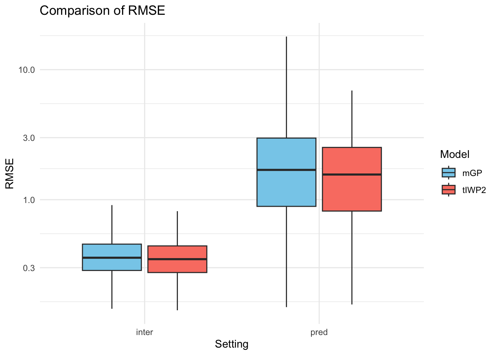
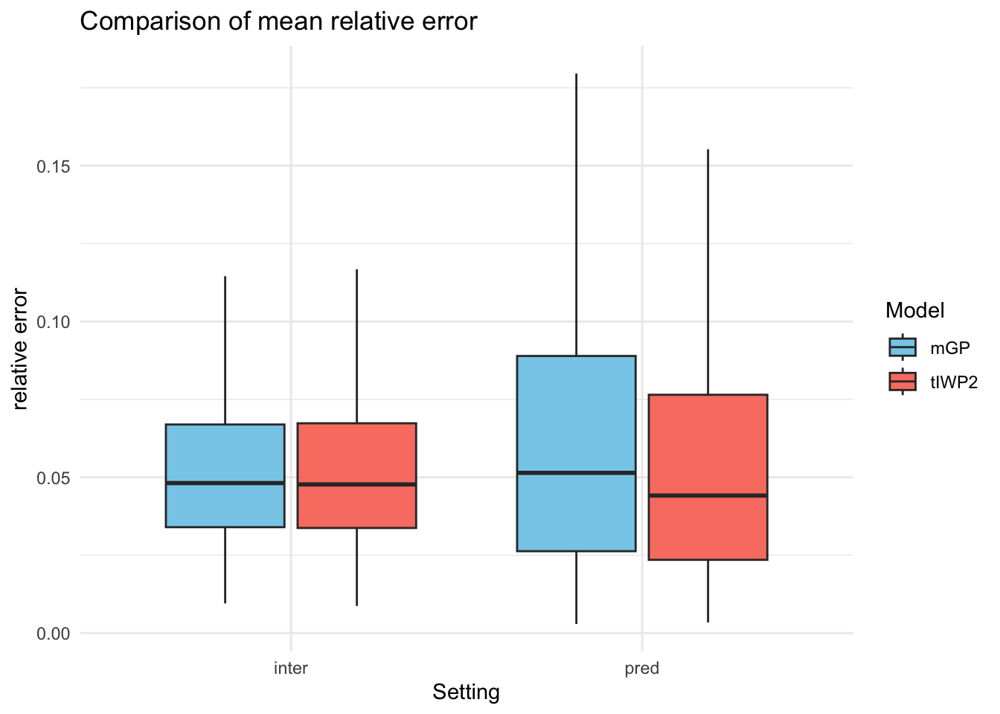
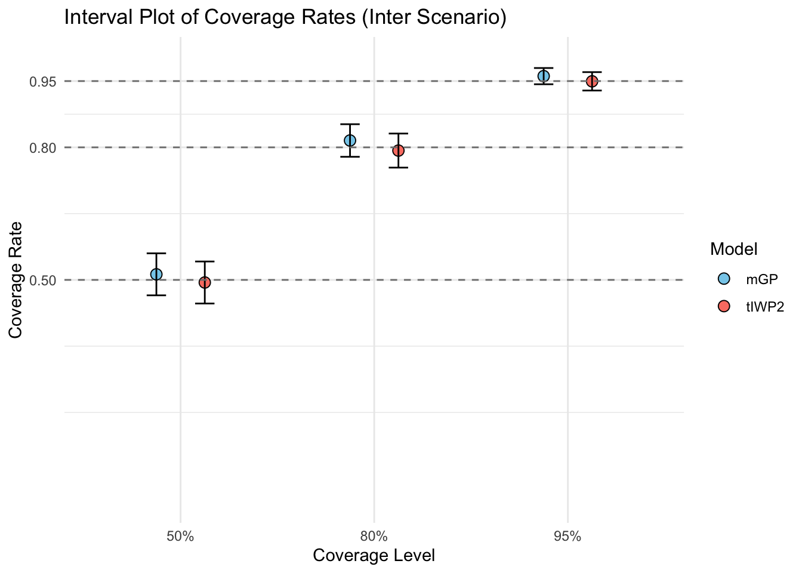
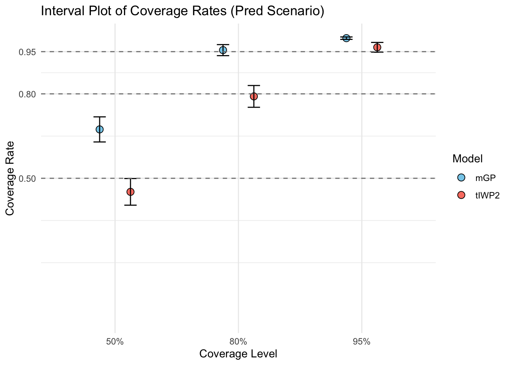

Last updated: 2026-04-20
Checks: 4 2
Knit directory: near_monotone_smoothing/
This reproducible R Markdown analysis was created with workflowr (version 1.7.2). The Checks tab describes the reproducibility checks that were applied when the results were created. The Past versions tab lists the development history.
The global environment had objects present when the code in the R
Markdown file was run. These objects can affect the analysis in your R
Markdown file in unknown ways. For reproduciblity it’s best to always
run the code in an empty environment. Use wflow_publish or
wflow_build to ensure that the code is always run in an
empty environment.
The following objects were defined in the global environment when these results were created:
| Name | Class | Size |
|---|---|---|
| A | matrix;array | 248 bytes |
| adj_mGP_sim | function | 108.8 Kb |
| adj_R_trans_matrix | function | 57.4 Kb |
| adj_R_trans_matrix_c1 | function | 99.2 Kb |
| adj_R_trans_matrix_c2 | function | 9.6 Kb |
| adj_R_trans_matrix_c3 | function | 18.3 Kb |
| adj_R_trans_matrix_c4 | function | 9.6 Kb |
| adj_SS_cov | function | 13.4 Kb |
| adj_SS_cov_c1 | function | 80.7 Kb |
| adj_SS_cov_c2 | function | 10.4 Kb |
| adj_SS_cov_c3 | function | 82.9 Kb |
| adj_SS_cov_c4 | function | 10.4 Kb |
| adj_SS_cov_c5 | function | 133.7 Kb |
| adj_SS_cov_c6 | function | 784 bytes |
| adj_SS_cov_mat | function | 97.5 Kb |
| adj_SS_cov_mat_c1 | function | 6.6 Kb |
| adj_SS_cov_mat_c2 | function | 5.9 Kb |
| adj_SS_cov_mat_c3 | function | 7.3 Kb |
| adj_SS_cov_mat_c4 | function | 5.9 Kb |
| adj_SS_cov_mat_c5 | function | 35.7 Kb |
| adj_SS_cov_mat_c6 | function | 5.9 Kb |
| adj_SS_cross_cov | function | 13.1 Kb |
| adj_SS_cross_cov_c1 | function | 41.1 Kb |
| adj_SS_cross_cov_c2 | function | 6.3 Kb |
| adj_SS_cross_cov_c3 | function | 41.7 Kb |
| adj_SS_cross_cov_c4 | function | 6.3 Kb |
| adj_SS_cross_cov_c5 | function | 88.8 Kb |
| adj_SS_cross_cov_c6 | function | 784 bytes |
| adj_SS_deriv_cov | function | 13.4 Kb |
| adj_SS_deriv_cov_c1 | function | 13 Kb |
| adj_SS_deriv_cov_c2 | function | 3.4 Kb |
| adj_SS_deriv_cov_c3 | function | 15 Kb |
| adj_SS_deriv_cov_c4 | function | 3.4 Kb |
| adj_SS_deriv_cov_c5 | function | 21.8 Kb |
| adj_SS_deriv_cov_c6 | function | 784 bytes |
| b | matrix;array | 232 bytes |
| B | numeric | 56 bytes |
| basis_samps | matrix;array | 1.1 Mb |
| beta_samps | numeric | 23.5 Kb |
| boundary_compute | function | 5.3 Kb |
| build_augmented_observation_matrix | function | 9.6 Kb |
| c | numeric | 56 bytes |
| compile_tmb_model | function | 6.1 Kb |
| Compute_Design | function | 47.4 Kb |
| Compute_Prec | function | 143.7 Kb |
| Compute_Prec_rev | function | 24.9 Kb |
| compute_tiwp_psd_boxcox | function | 5 Kb |
| d | numeric | 56 bytes |
| data_CD3518_sample_2 | tbl_df;tbl;data.frame | 448.2 Kb |
| data_sim | data.frame | 2.4 Kb |
| data_train | data.frame | 2.1 Kb |
| datSub | data.frame | 258 Kb |
| evaluate_global_interval_draws | function | 5.2 Kb |
| evaluate_regionwise_interval_draws | function | 15.2 Kb |
| evaluate_train_prediction_draws | function | 27.5 Kb |
| f | function | 5.5 Kb |
| f_condition | numeric | 56 bytes |
| f_deriv_condition | numeric | 56 bytes |
| f_lower | numeric | 10.9 Kb |
| f_mean | numeric | 10.9 Kb |
| f_samps | matrix;array | 31.8 Mb |
| f_upper | numeric | 10.9 Kb |
| fit_exact_known_sd_model | function | 11 Kb |
| fit_iwp_known_sd | function | 9.9 Kb |
| fit_mgp_fem_known_sd | function | 14.7 Kb |
| fit_mgp_known_sd | function | 12.3 Kb |
| fit_tiwp_known_sd | function | 12 Kb |
| haveData | integer | 26.1 Kb |
| i | integer | 56 bytes |
| IWP_joint_prec | function | 419.4 Kb |
| iwp_subset_mode | character | 112 bytes |
| iwp_summary | data.frame | 4.2 Kb |
| iwp2 | list | 771 Kb |
| k | numeric | 56 bytes |
| k_fem | numeric | 56 bytes |
| m | function | 1.6 Kb |
| m_deriv | function | 3.9 Kb |
| m_true | function | 4.4 Kb |
| make_boxcox_transform | function | 14.2 Kb |
| make_boxcox_transform_derivative | function | 9.2 Kb |
| mGP | list | 772.6 Kb |
| mGP_FEM | list | 701 Kb |
| mGP_FEM_summary | data.frame | 4.2 Kb |
| mGP_joint_prec | function | 259.7 Kb |
| mGP_sim | function | 108.8 Kb |
| mGP_summary | data.frame | 4.2 Kb |
| mod_mgp | FitResult | 2.7 Mb |
| mspline_cov | function | 14.6 Kb |
| mspline_cov_c1 | function | 71 Kb |
| mspline_cov_c2 | function | 22.8 Kb |
| mspline_cov_c3 | function | 77.7 Kb |
| mspline_cov_c4 | function | 5.1 Kb |
| mspline_cov_c5 | function | 23.5 Kb |
| mspline_cov_c6 | function | 35.4 Kb |
| mspline_cross_cov | function | 14.6 Kb |
| mspline_cross_cov_c1 | function | 39.7 Kb |
| mspline_cross_cov_c2 | function | 14.9 Kb |
| mspline_cross_cov_c3 | function | 44.3 Kb |
| mspline_cross_cov_c4 | function | 4.3 Kb |
| mspline_cross_cov_c5 | function | 10.6 Kb |
| mspline_cross_cov_c6 | function | 26.6 Kb |
| mspline_deriv_cov | function | 14.6 Kb |
| mspline_deriv_cov_c1 | function | 8.9 Kb |
| mspline_deriv_cov_c2 | function | 6.2 Kb |
| mspline_deriv_cov_c3 | function | 14.4 Kb |
| mspline_deriv_cov_c4 | function | 1.8 Kb |
| mspline_deriv_cov_c5 | function | 3.2 Kb |
| mspline_deriv_cov_c6 | function | 12.2 Kb |
| n | numeric | 56 bytes |
| NperStrata | array | 114.4 Kb |
| obs_max | numeric | 56 bytes |
| old_wd | character | 168 bytes |
| p | numeric | 56 bytes |
| prior_conversion_mgp | function | 6 Kb |
| prior_median | numeric | 56 bytes |
| prior_psd | list | 464 bytes |
| PSD_compute | function | 17.4 Kb |
| psd_iwp | numeric | 56 bytes |
| psd_mgp | numeric | 56 bytes |
| psd_tiwp2 | numeric | 56 bytes |
| PSD_tIWP2_compute | function | 2 Kb |
| R_trans_matrix | function | 61.8 Kb |
| R_trans_matrix_c1 | function | 106.8 Kb |
| R_trans_matrix_c2 | function | 8.9 Kb |
| R_trans_matrix_c3 | function | 88.1 Kb |
| R_trans_matrix_c4 | function | 9.6 Kb |
| RE_list | list | 13.9 Kb |
| ref | numeric | 56 bytes |
| resolve_curvature_parameter | function | 22.2 Kb |
| result | matrix;array | 87.9 Kb |
| result_neg | matrix;array | 73.1 Kb |
| result_pos | matrix;array | 18.1 Kb |
| result0 | matrix;array | 81.9 Kb |
| result1 | matrix;array | 80.7 Kb |
| result1_part1 | matrix;array | 71.9 Kb |
| result1_part2 | matrix;array | 16.9 Kb |
| samp_max | numeric | 56 bytes |
| sample_exact_known_sd_fit | function | 7.9 Kb |
| sample_mgp_fem_known_sd_fit | function | 8.4 Kb |
| samples_iwp2 | dgeMatrix | 2.3 Mb |
| samples_mGP | dgeMatrix | 2.3 Mb |
| samples_mGP_FEM | dgeMatrix | 2.3 Mb |
| samples_tiwp2 | dgeMatrix | 2.3 Mb |
| sampling_from_FEM | function | 9.6 Kb |
| samps_neg | matrix;array | 2.7 Kb |
| samps_pos | matrix;array | 1.1 Kb |
| samps0 | matrix;array | 3 Kb |
| samps1 | matrix;array | 3 Kb |
| samps1_part1 | matrix;array | 2.7 Kb |
| samps1_part2 | matrix;array | 1.1 Kb |
| sd | numeric | 56 bytes |
| sd_noise | numeric | 56 bytes |
| sigma | numeric | 56 bytes |
| sim_IWp_Var | function | 359.5 Kb |
| simulate_tiwp_boxcox | function | 7.2 Kb |
| Spm | numeric | 856 bytes |
| SS_cov | function | 110.5 Kb |
| SS_cov_c1 | function | 703.6 Kb |
| SS_cov_c2 | function | 37.6 Kb |
| SS_cov_c3 | function | 67 Kb |
| SS_cov_c4 | function | 10.4 Kb |
| SS_cov_c5 | function | 23 Kb |
| SS_cov_c6 | function | 636.9 Kb |
| SS_cov_mat | function | 110.5 Kb |
| SS_cov_mat_c1 | function | 44.2 Kb |
| SS_cov_mat_c2 | function | 5.9 Kb |
| SS_cov_mat_c3 | function | 7.3 Kb |
| SS_cov_mat_c4 | function | 5.9 Kb |
| SS_cov_mat_c5 | function | 5.9 Kb |
| SS_cov_mat_c6 | function | 35.7 Kb |
| SS_cross_cov | function | 14.6 Kb |
| SS_cross_cov_c1 | function | 253.1 Kb |
| SS_cross_cov_c2 | function | 18 Kb |
| SS_cross_cov_c3 | function | 36.8 Kb |
| SS_cross_cov_c4 | function | 6.3 Kb |
| SS_cross_cov_c5 | function | 13.1 Kb |
| SS_cross_cov_c6 | function | 466.3 Kb |
| SS_deriv_cov | function | 14.6 Kb |
| SS_deriv_cov_c1 | function | 36.5 Kb |
| SS_deriv_cov_c2 | function | 8.8 Kb |
| SS_deriv_cov_c3 | function | 10.6 Kb |
| SS_deriv_cov_c4 | function | 3.4 Kb |
| SS_deriv_cov_c5 | function | 3.3 Kb |
| SS_deriv_cov_c6 | function | 99.9 Kb |
| summarize_function_samples | function | 3.2 Kb |
| t | numeric | 928 bytes |
| t_trans | numeric | 856 bytes |
| tilde_x | numeric | 216 bytes |
| tiwp_summary | data.frame | 4.2 Kb |
| tiwp2 | list | 772.6 Kb |
| u | numeric | 56 bytes |
| var0 | numeric | 856 bytes |
| var1 | numeric | 856 bytes |
| x | numeric | 928 bytes |
| X | matrix;array | 11.1 Kb |
| x_tilde | numeric | 768 bytes |
| x_trans | numeric | 928 bytes |
| x_trans_part1 | numeric | 768 bytes |
| x_trans_part1_relative | numeric | 768 bytes |
| x_trans_part2 | numeric | 216 bytes |
| x_trans_part2_relative | numeric | 216 bytes |
| y | numeric | 848 bytes |
The command set.seed(20240619) was run prior to running
the code in the R Markdown file. Setting a seed ensures that any results
that rely on randomness, e.g. subsampling or permutations, are
reproducible.
Great job! Recording the operating system, R version, and package versions is critical for reproducibility.
Nice! There were no cached chunks for this analysis, so you can be confident that you successfully produced the results during this run.
Great job! Using relative paths to the files within your workflowr project makes it easier to run your code on other machines.
Tracking code development and connecting the code version to the
results is critical for reproducibility. To start using Git, open the
Terminal and type git init in your project directory.
This project is not being versioned with Git. To obtain the full
reproducibility benefits of using workflowr, please see
?wflow_start.
In this simulation study, we study the robustness of the tIWP2 and the mGP priors.
The simulation A is designed as follows, for each of the \(B = 1000\) replications:
Visualize the RMSE result for interpolation and prediction:

Visualize the MLE result for interpolation and prediction:

A table of the summary statistics:
| Model | Coverage 50% | Coverage 80% | Coverage 95% | RMSE | MLE |
|---|---|---|---|---|---|
| mGP | 0.489 (0.016) | 0.788 (0.013) | 0.945 (0.007) | 0.394 (0.126) | 0.054 (0.027) |
| tIWP2 | 0.413 (0.016) | 0.703 (0.014) | 0.889 (0.01) | 0.417 (0.134) | 0.056 (0.028) |
| Model | Coverage 50% | Coverage 80% | Coverage 95% | RMSE | MLE |
|---|---|---|---|---|---|
| mGP | 0.454 (0.016) | 0.778 (0.013) | 0.954 (0.007) | 3.935 (2.746) | 0.163 (0.502) |
| tIWP2 | 0.214 (0.013) | 0.407 (0.016) | 0.604 (0.015) | 4.016 (2.807) | 0.173 (0.585) |
Visualize the coverage probabilities for interpolation and prediction:


The simulation B is designed similarly as the simulation A, except now:
Visualize the RMSE result for interpolation and prediction:

Visualize the MLE result for interpolation and prediction:

A table of the summary statistics:
| Model | Coverage 50% | Coverage 80% | Coverage 95% | RMSE | MLE |
|---|---|---|---|---|---|
| mGP | 0.513 (0.016) | 0.816 (0.012) | 0.961 (0.006) | 0.374 (0.122) | 0.053 (0.026) |
| tIWP2 | 0.494 (0.016) | 0.793 (0.013) | 0.949 (0.007) | 0.362 (0.121) | 0.053 (0.026) |
| Model | Coverage 50% | Coverage 80% | Coverage 95% | RMSE | MLE |
|---|---|---|---|---|---|
| mGP | 0.674 (0.015) | 0.955 (0.007) | 0.998 (0.001) | 2.173 (1.706) | 0.068 (0.062) |
| tIWP2 | 0.452 (0.016) | 0.791 (0.013) | 0.965 (0.006) | 1.825 (1.276) | 0.057 (0.049) |
Visualize the coverage probabilities for interpolation and prediction:


sessionInfo()R version 4.5.1 (2025-06-13)
Platform: aarch64-apple-darwin20
Running under: macOS Sequoia 15.6.1
Matrix products: default
BLAS: /Library/Frameworks/R.framework/Versions/4.5-arm64/Resources/lib/libRblas.0.dylib
LAPACK: /Library/Frameworks/R.framework/Versions/4.5-arm64/Resources/lib/libRlapack.dylib; LAPACK version 3.12.1
locale:
[1] en_US.UTF-8/en_US.UTF-8/en_US.UTF-8/C/en_US.UTF-8/en_US.UTF-8
time zone: America/Chicago
tzcode source: internal
attached base packages:
[1] stats graphics grDevices utils datasets methods base
other attached packages:
[1] BayesGP_0.1.3 knitr_1.50 Matrix_1.7-4 lubridate_1.9.4
[5] forcats_1.0.1 stringr_1.6.0 dplyr_1.1.4 purrr_1.2.0
[9] readr_2.1.6 tidyr_1.3.1 tibble_3.3.0 ggplot2_4.0.1
[13] tidyverse_2.0.0
loaded via a namespace (and not attached):
[1] gtable_0.3.6 TMB_1.9.19 xfun_0.55
[4] bslib_0.9.0 ks_1.15.1 lattice_0.22-7
[7] numDeriv_2016.8-1.1 tzdb_0.5.0 bitops_1.0-9
[10] vctrs_0.6.5 tools_4.5.1 generics_0.1.4
[13] parallel_4.5.1 aghq_0.4.1 cluster_2.1.8.1
[16] pkgconfig_2.0.3 fds_1.8 KernSmooth_2.23-26
[19] data.table_1.17.8 RColorBrewer_1.1-3 S7_0.2.1
[22] lifecycle_1.0.4 compiler_4.5.1 farver_2.1.2
[25] git2r_0.36.2 statmod_1.5.1 mvQuad_1.0-8
[28] httpuv_1.6.16 htmltools_0.5.9 rainbow_3.8
[31] sass_0.4.10 RCurl_1.98-1.17 yaml_2.3.12
[34] pracma_2.4.6 later_1.4.4 pillar_1.11.1
[37] jquerylib_0.1.4 MASS_7.3-65 cachem_1.1.0
[40] mclust_6.1.2 tidyselect_1.2.1 digest_0.6.39
[43] mvtnorm_1.3-3 stringi_1.8.7 LaplacesDemon_16.1.6
[46] labeling_0.4.3 splines_4.5.1 pcaPP_2.0-5
[49] rprojroot_2.1.1 fastmap_1.2.0 grid_4.5.1
[52] colorspace_2.1-2 cli_3.6.5 magrittr_2.0.4
[55] dichromat_2.0-0.1 withr_3.0.2 scales_1.4.0
[58] promises_1.5.0 timechange_0.3.0 rmarkdown_2.30
[61] otel_0.2.0 deSolve_1.40 workflowr_1.7.2
[64] hms_1.1.4 evaluate_1.0.5 rlang_1.1.6
[67] Rcpp_1.1.0 glue_1.8.0 fda_6.3.0
[70] hdrcde_3.4 jsonlite_2.0.0 R6_2.6.1
[73] fs_1.6.6